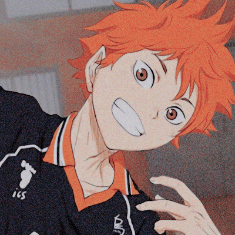
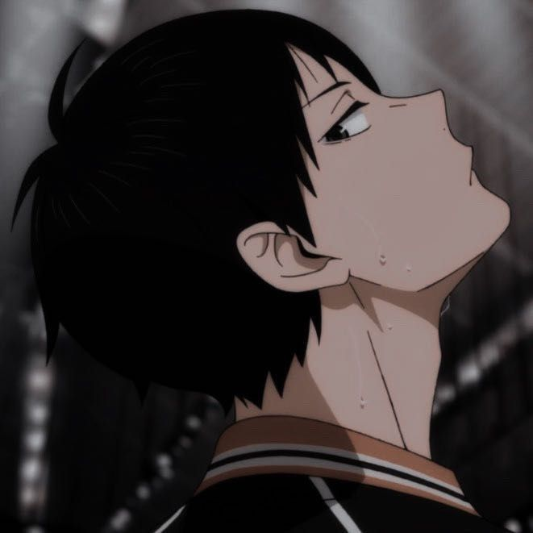
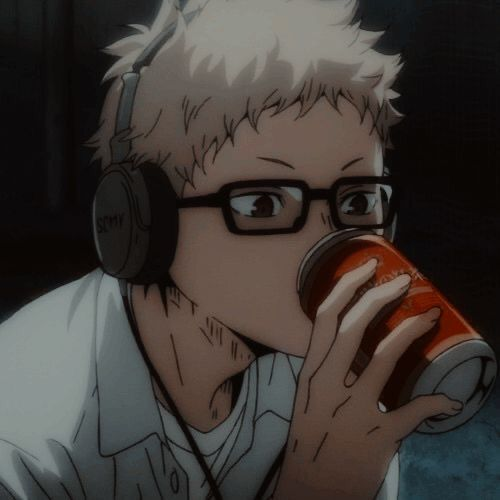
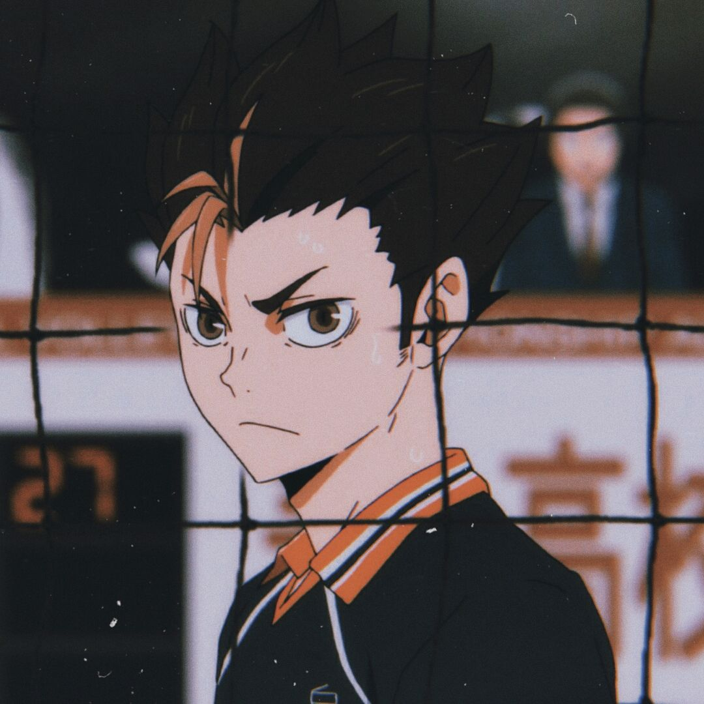
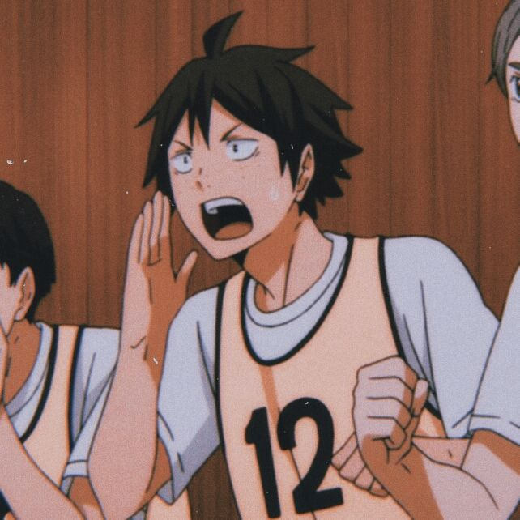
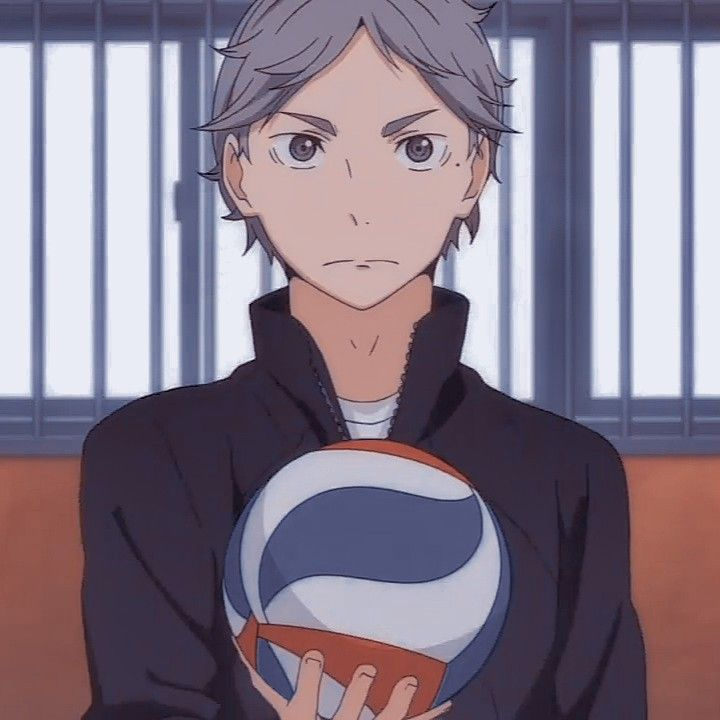
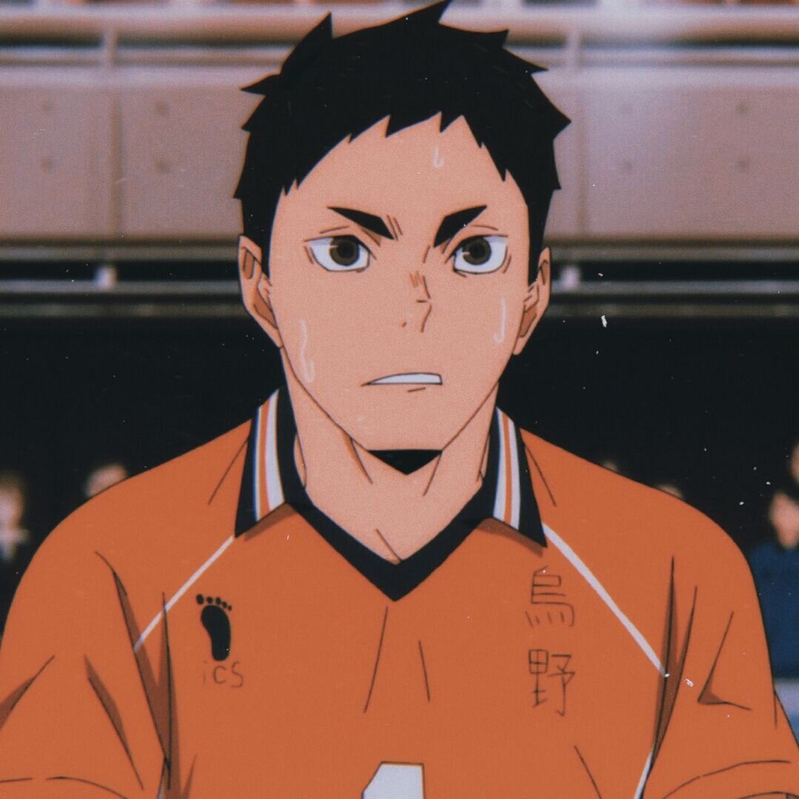

P E R S O N A G E N S
nota: irei colocar somente os personagens que mais aparecem na primeira temporada

- Nome: Hinata Shoyou
- Idade: 16 anos
- Posição: Bloqueio ou Ponta
- Personalidade: hiperativo, não desiste fácil. No mbti está classificado como ESFP;
- Habilidades: Velocidade, pulo e sua resistência vital durante a partida
- O que ajuda também ele ser tão bom é por conta de sua dupla. Mesmo se desentendendo, Kageyama e Hinata se tornam melhores amigos, o garoto sonha em ser assim como sua inspiração o ás da equipe em que joga.
- História: Não somente por ter visto um campeonato de uma hora para outra decidiu ser jogador de vôlei, ele se sentiu representado pelo ás "o pequeno gigante" que como o nome tem a estatura baixa, mas ainda teve chance no volei. Então o garoto faz de tudo para formar um time de vôlei em sua escola. No entanto não haviam jogadores particularmente bons no esporte o suficiente para disputar com um adversário experiente, o personagem tinha dar tudo de si para que o time avançasse, seu esforço era praticamente o único. Depois de uma partida com a escola Kitagawa Daiichi, que joga contra Kageyama Tobio e acaba perdendo, Hinata resolve superar Kageyama. Até que Kageyama vá a mesma escola que ele e tornem-se amigos.

- Nome: Kageyama Tobio
- Idade: 16- 17 anos
- Posição: levantador
- Personalidade: mal humorado, perde a paciência facilmente. Duas palavras para descrevê-lo seria "perfeccionista" e "arrogante". É péssimo quando se fala em trabalhar equipe no ínicio, (tanto que desde o ínicio do anime ele e hinata tem uma certa rivalidade.) mas isso é trabalhado durante o anime, inclusive isso é o que faz ele ser eliminado da equipe após a perda do time de hinata. Está classificado como ISTJ;
- Habilidades: Técnica, perspectiva calculista do jogo e energia;
- Altura: 1.80,6
- História: Sempre cresceu com o volei, havia tempos dos quais ele jogava com sua irmã mais velha e seu avô e no seu próprio tempo encontrou sua paixão para o esporte. Anos mais tarde tornara "o gênio levantador" assim que entrou na escola Kitagawa Daiichi, seu potencial era até mesmo maior que o levantador veterano (Toru Oikawa), entretanto como disse antes era péssimo em trabalho em equipe e acabou isolado por conta disso até que conhece Hinata.
- Divide o protagonismo com o Hinata, e assim como o mesmo tem um sonho de ser o melhor levantador do mundo e também ser classificado para as olímpiadas

- Nome: Tsukishima Kei
- Idade: 16- 17 anos
- Posição: Bloqueador Central
- Personalidade: tem uma natureza antagônica que muitas vezes leva a ser o personagem irritante tanto para sua equipe, tanto para o público. Porém a evolução do personagem é trabalhada durante o anime, fazendo o público se interessar cada vez mais por sua personalidade antagonista, seria como um "enemies to love". Além disso é calmo e introvertido, não gosta de pessoas agitadas ou barulhentas como Nishinoya e Hinata. No MBTI é classificado como: INTJ
- Habilidades: perspectiva intelígivel durante a partida
- Altura: 1.90,1 (é o mais alto do time)
- História: O próprio irmão que não conseguiu atingir a seu tanto desejado auge de ser classificado fora do colégio (Karasuno) que estudava, vendo a decepção do irmão, Tsukishima resolve que ele não deveria se esforçar mais para continuar, o que também é um impacto para sua auto-estima que em casos não ajuda muito na partida. Quando muda para a escola karasuno, ele resolve dar uma chance ao volei novamente, e só mais tarde começa levar o esporte a sério.

- Nome: Nishinoya Yuu
- Idade: 17 anos
- Posição: Líbero
- Personalidade: Ele é uma pessoa muito enérgica e temperamental. Gosta de fazer travessuras sem se preocupar em suas consequências (e pode até usar a violência como modo de desabafar sua raiva). É atencioso com o sentimentos e inseguranças de seus colegas de equipe.
- Habilidades: Nishinoya é bom em agir no impulso do momento adaptando-se ao fluxo do jogo. foi referido a seu capitão como "divindade guardiã", Uma de suas técnicas "Rolling Thunder" consiste em executar um salto mortal;
- Altura: 1.59 (o mais baixo do time)

- Nome: Tadashi Yamaguchi
- Idade: 16 anos
- Posição: Bloqueador de meio
- Personalidade: É bastante tímido o que provavelmente foi por conta de ser intimadado a partir de sua aparência, é carismático mas tende a se juntar com Tsukishima para provocar os jogadores, apesar de serem melhores amigos Yamaguchi é fiel na amizade.
- Habilidades: Depois de conhecer seus novos companheiros de equipe, ele traspassou a amar ainda mais o vôlei e lutou pela vitória e pelo reconhecimento de suas habilidades. Assim, Yamaguchi decidiu dominar a técnica do saque flutuante e usá-la para se tornar um servidor pinch, auxiliando o time nos momentos mais críticos das partidas.
- Altura: 1,79

- Nome: Koshi Sugawara
- Idade: 18 anos
- Posição: É o sub-levantador e vice-capitão
- Personalidade: calma e gentil com seus colegas de equipe, apoia os mesmos em momentos dificeis, mesmo que ele não seja mais o Levantador titular da Karasuno, ele não pensa em desistir de jogar. Assim, ele encoraja a si mesmo e aos seus companheiros a não desistir, não importa quão difícil seja a situação.
- Altura: 1,74.3
- Habilidades: Ataque Sincronizado (confundir os oponentes durante a partida), Saque em aperto, Um poto- dois levantadores (um ataque sincronizado entre kageyama e Sugawara). Presta uma incrivelmente atenção no time adversário.

- Nome: Daichi Sawamura
- Idade: 18 anos
- Posição: oposto rebatedor
- Personalidade: Daichi é um capitão muito atencioso e responsável que sempre coloca sua equipe em primeiro lugar. Paciente e compreensivo, ele se torna muito rigoroso quando seus companheiros de equipe estão fora da linha, como mostrado quando ele bloqueou Kageyama e Hinata do ginásio quando eles discutiram e se recusaram a ouvir. No entanto, suas ações sempre foram para o melhor interesse da equipe. Devido à sua devoção à sua equipe e seu comando, ele é respeitado e temido por sua equipe.
- Altura: 1,76.8 cm
- Habilidades: Tem função de defender os ataques do adversários, pois conta com uma recepção excepcional, mas é notável perceber que também consegue atacar e marcar pontos.